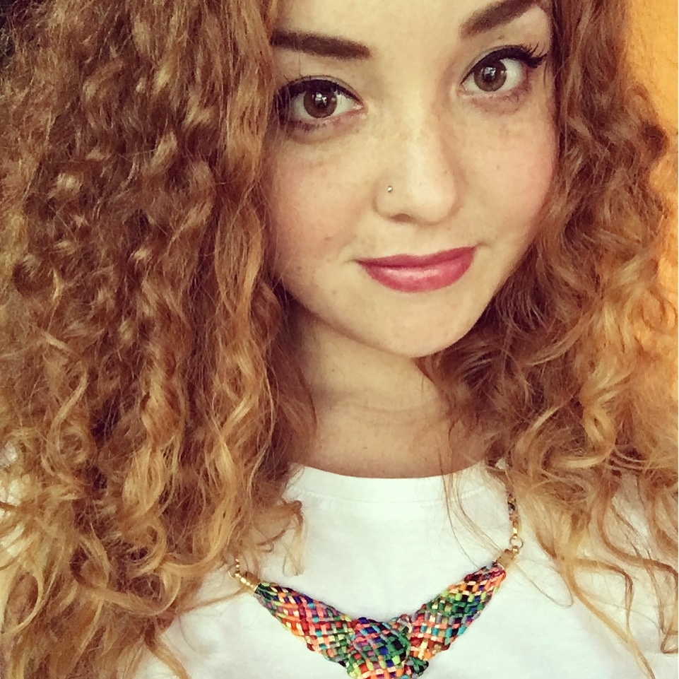

<!DOCTYPE html>

<html lang="en"></html>

<html>
  <head>
    
    <meta http-equiv="X-UA-Compatible" content="IE=edge">
    <meta charset="utf-8">
    <meta name="viewport" content="width=device-width, initial-scale=1.0">
    <link rel="stylesheet" href="styles.css">
    <link rel="stylesheet" href="fonts.css">
    <link rel="stylesheet" href="media-query.css">
    <link rel="stylesheet" href="Monoton-Regular.woff2">
    <link rel="stylesheet" href="Roboto-Regular.woff2">
    <script src="scroll.js"></script>
    <link rel="stylesheet" href="https://cdnjs.cloudflare.com/ajax/libs/font-awesome/4.7.0/css/font-awesome.min.css">
    <title>Hope Widdows Portfolio Page</title>
  </head>
  

  <body>

    <header>
      <!--Navigtion Bar-->
      <nav>
        <div class="nav_links">
          <label for="toggle">&#9776;</label>
          <input type="checkbox" id="toggle"/>

          <div class="menu">
            <a href="index.html">Home</a>
            <a href="experience.html">Experience</a>
            <a href="blog.html">Blog</a>
            <a href="contact.html">Contact</a>
          </div>
        </div>
      </nav>

      <h1>Hope Widdows</h1>
        
      <h3>Welcome!</h3>
   </header>
 
       <section class="index_page_container_1">
        <p>Hiya! My name is Hope, and I am a student developer. Thanks for swinging by!</p><br>

        <p>My most recent working background was in the Social Services, I worked as a Residential Youth Worker. 
          It was always my dream job, and through all the danger and the heartbreak, I lived to get up every day and work with these amazing, 
          and often misunderstood young people.  </p><br>

        <p> As we all know, life doesn't always pan out like we thought it might, and the diagnosis of a chronic illness meant that I had to 
          step back from youth work. It forced me to take some serious time out, and focus on switching gears. I did A LOT of thinking, 
        A LOT of crying, and had A LOT of converstations about what I might do next.</p><br>

        <p>After a long, long year (Covid, am I right?) it occured to me that I really enjoyed trying to figure out what was "under the hood"
          when playing around with Stardew Valley mods. I spoke to a friend that recently moved from the art world over to the tech world (and was LOVING IT) and by 
          the end of that conversation, I knew I had stumbled upon my future.</p><br>

        <p>I immediately starting looking into all kinds of degrees, diplomas, bootcamps, anything that could teach me how to code, and code well! 
          It wasn't too long before I was enrolled and on my way to my new dream job! </p><br>

        <p>Learning to code has been such a fun experience, sure there's some challenges (okay, a lot of challenges...) but I find it absolutely thrilling to be 
          constantly learning and growing. I'm really excited about my future in this field and the joy of being in a state of constant evolution!</p><br>
       </section>

      </body>

      <footer class="page-footer">
        <!-- Add font awesome icons -->
  <!-- Add font awesome icons -->
  <a href="https://www.facebook.com" target="_blank" alt="Link to Facebook Page" title="Link to Facebook Page" class="fa fa-facebook"></a>
  <a href="https://www.linkedin.com" target="_blank" alt="Link to LinkedIn Page" title="Link to LinkedIn Page" class="fa fa-linkedin"></a>
  <a href="https://www.twitter.com" target="_blank" alt="Link to Twitter Page" title="Link to Twitter Page" class="fa fa-twitter"></a>
  <a href="https://www.instagram.com" target="_blank" alt="Link to Instagram Page" title="Link to Instagram Page" class="fa fa-instagram"></a>
  <a href="https://www.github.com" target="_blank" alt="Link to GitHub Page" title="Link to GitHub Page" class="fa fa-github"></a>


        <button onclick="topFunction()" id="myBtn" title="Return to Top of Page">Return to Top</button>  
      </footer>
</html>
